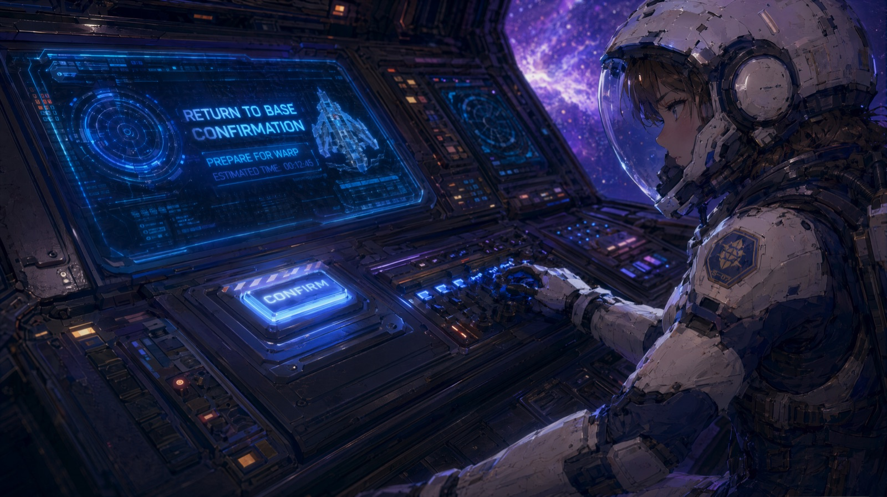

02/03 — ANIMATION · 科幻
返航信号
你还是来了 · 科幻动画短片 · 第一集 60 秒
METHOD · 方法论
首尾帧控制 + 影调分区
每镜定义「首帧 / 尾帧」两张参考图，中间过程交给模型插值——构图、影调、人物设定锁死，变化只集中在动作、情绪或画面推进上。20 个镜头在纸面上先「成片」一遍，再进即梦逐镜生成，素材按镜头编号归档。
三线叙事在三种影调里切换：现实是冷蓝紫的驾驶舱；回忆是暖金的太空学院；事故是红黑的警报与误会。情绪上反复提醒自己：「女主不要哭，不要情绪外放，保持克制高级。」
- 现实线冷蓝紫驾驶舱——复古未来主义座舱、密集仪表灯、紫蓝星云
- 回忆线暖金太空学院——少年陆野把通讯芯片 L-07 放进岑遥手心
- 事故线红黑警报——陆野在舱外回头一眼，痛苦离开，留下误会
- 连续性飞船级别都写死：「不要突然变成战斗机或大型军舰」

「以后不管你飞多远，我都能找到你。」—— 陆野的承诺，也是全片的钩子